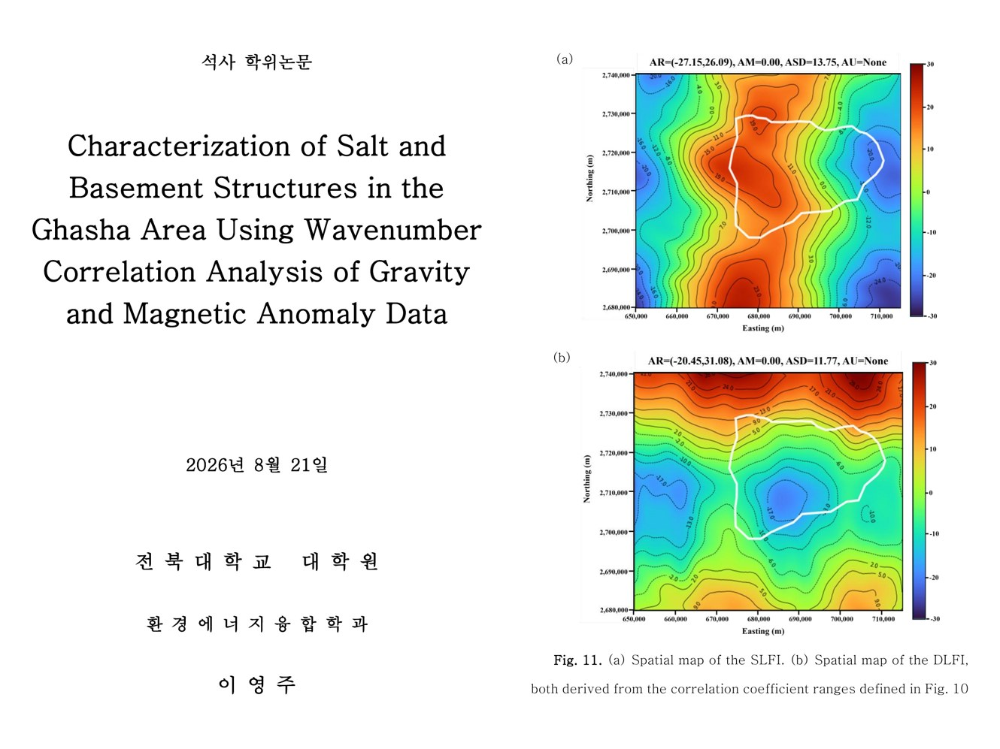

01 — Research
M.S. — Separating gravity & magnetic signals with wavenumber correlation to resolve subsurface structure (SPE Journal, first author)
Designed wavenumber-correlation indices (SLFI · DLFI) that separate overlapping gravity and magnetic signals to map salt and basement structures; completed an SCIE paper and thesis through a Calgary research stay and a 3-institution collaboration
r ≥ 0.94agreement with independent published models
Signal processing (wavenumber domain)Correlation analysisIndex designGravity & magnetic dataInternational collaboration
1
Wavenumber correlation of gravity & magnetic data for salt/basement structure (M.S. · SPE Journal first author)
- Problem
- In the Ghasha field offshore Abu Dhabi, salt and basement lie under 8–10 km of sediments, so gravity and magnetic signals overlap; earlier methods put the salt at ~6,000 m, far shallower than the ~9,300 m seen in seismic data
- Role
- Propose an analysis that separates basement and salt signals in airborne gravity and magnetic data
- Actions
- Built a wavenumber correlation filtering (WCF) pipeline — upward continuation and normalization, then the correlation coefficient CC(k) between the two signals at each wavenumber
- Designed two indices — SLFI from positively correlated components (basement) and DLFI from weak/negative ones (salt)
- Chose thresholds from energy–correlation trade-off curves instead of by eye (upward continuation 1,500 m at the knee point; SLFI band 0.5–1.0 keeps ~half the energy at correlation 0.85)
- Validated against three independent published models with map, profile and 3-D density comparisons
- Presented Abu Dhabi processing and analysis results at 10+ regular lab research meetings (2024.05–2026.01) and at the 2025.11 Basic Research Lab workshop
- Drafted annual and progress reports for national R&D projects (incl. the IITP global talent program) and handled lab administration
- Results
- SLFI basement structure agrees with three independent models at r ≥ 0.94 (profile correlation 0.95–0.98 after shift alignment)
- DLFI reproduces the salt distribution and suggests an additional salt uplift west of Ghasha
- First-author paper in SPE Journal (SCIE, 2026, with Univ. of Calgary and Khalifa Univ.) · 3 conference talks (2024)
- Best Student Paper (poster), KSEG Fall Conference 2024 · M.S. degree conferred 2026.08.21


_가샤_지역_암염·기반암_구조_특성화.jpg)
→LFI_5단계_분석흐름.jpg)
_구간별_기반암·암염_분류모델.jpg)
·DLFI(암염)_공간분포.jpg)
2
Research stay at the University of Calgary — joint interpretation of gravity & magnetic data
- Problem
- Salt domes and basement are hard to interpret from one type of survey alone
- Role
- Carry out joint gravity–magnetic interpretation research during a ~6-month stay
- Actions
- Funded by the MSIT/IITP Global Talent program in digital fields (AI & digital-twin smart CCS)
- Worked with the Department of Geomatics Engineering on wavenumber correlation of airborne gravity and magnetic data
- Extended the work into a 3-institution collaboration with Khalifa University (UAE)
- Joined a field geophysical survey in Kananaskis (Canadian Rockies) and co-wrote the English Field Exploration Report (2024.08)
- Results
- Led to the first-author SPE Journal paper (SCIE, 2026) and the M.S. thesis


.jpg)